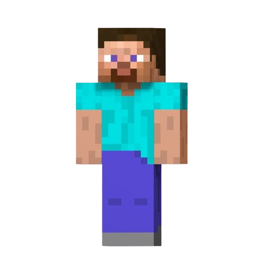
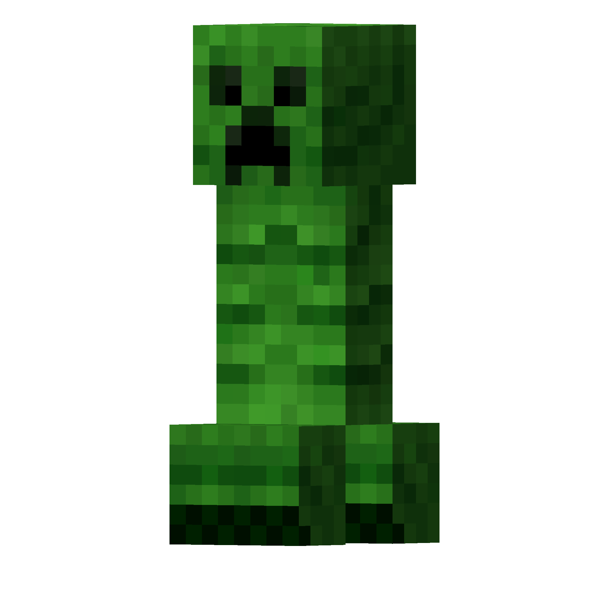
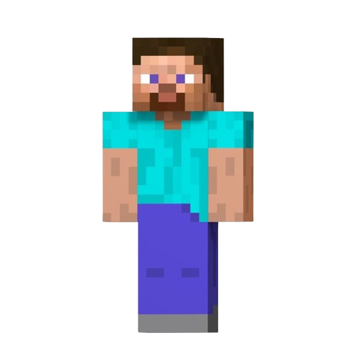
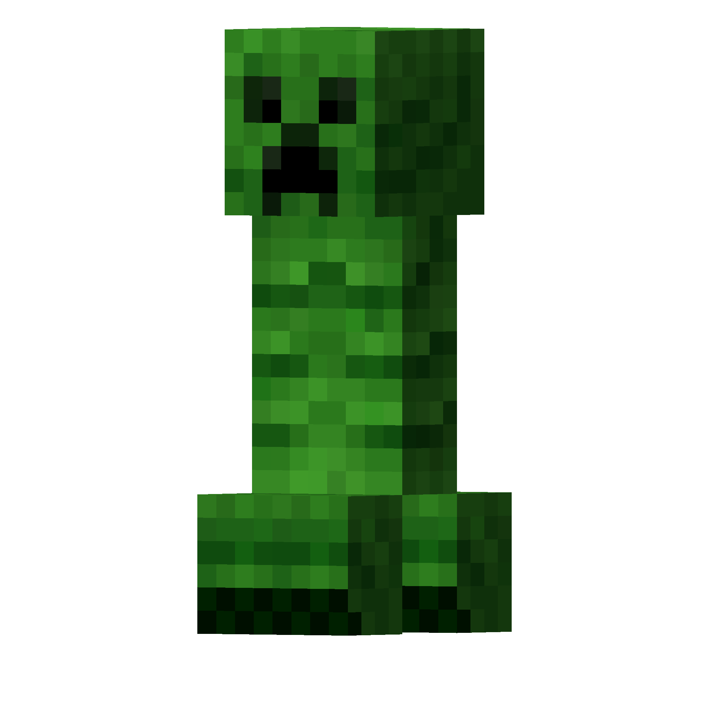

O Village Craft é um projeto que surgiu diante do cenário em que o próprio site oficial do Minecraft não disponibiliza uma mecânica de conversa entre os usuários, muito menos uma forma de entretenimento entre seus jogadores, sendo possível haver esses recursos dentro do jogo que, inclusive, é pago.
Com isso, o Village Craft vem para trazer à comunidade do Minecraft a oportunidade de se entreter e estar por dentro das notícias mais recentes relacionadas ao jogo. Para isso, foi desenvolvido uma página exclusiva para os jogadores de Minecraft contendo jogos de raciocínio e, além disso, chats para que os usuários consigam interagir uns aos outros, sem depender de algo externo, como Discord ou o próprio jogo Minecraft.

O Minecraft é um jogo que permite com que o jogador utilize toda a sua imaginação e sua criatividade para fazer construções incríveis e únicas. Lançado em 2009 pelo sueco Markus Persson, o jogo tem ganhado uma comunidade imensa com o passar do tempo, sendo um dos jogos mais vendidos da história. Em um dos seus principais modo de jogo, o sobrevivência, existe um mundo infinito de blocos em que o jogador deve explorar e tentar sobreviver diante aos obstáculos que haverão na jornada, como as criaturas (mobs).
Atualmente, o jogo recebe atualizações anualmente, sempre contendo novidades, como novos mobs, novos blocos, novas mecânicas, entre outros. A próxima atualização a ser lançada será a 1.21 do Java Edition, que vem surpreendendo a comunidade com a grande quantidade de adições que o jogo terá dia 13 de junho.